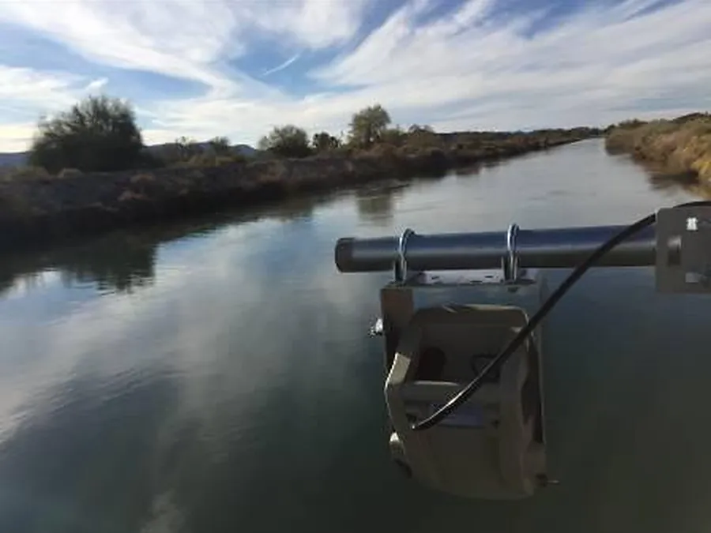

Débitmètres · Surface libre
PHOENIXDébitmètre radar sans contact pour rivières et grands canaux
Le débit d’une rivière ou d’un grand canal mesuré sans contact, depuis un pont, une passerelle ou une potence. Dérivé du RAVEN-EYE, le PHOENIX ouvre son faisceau à 32° pour voir les vitesses sur toute la largeur de l’écoulement.
- Vitesse
- ± 0,10 à ± 15 m/s
- Précision
- ± 1 %
- Distance à l’eau
- 0,50 à 35 m
- Sorties
- RS485 Modbus · 4-20 mA
Idéal pour
- Rivières et cours d’eau
- Canaux d’irrigation
- Canaux d’amenée
- Mesure en crue
- Entrées de station d’épuration
LeasingDisponible à l’achat ou en leasing, par mensualités. Comment ça marche
Points forts
La mesure de débit en rivière sans rien mettre dans l’eau : rien à abîmer par les sédiments ou les embâcles, même en crue.
- Sans contactNi sédiment ni débris flottant ne peuvent endommager l’appareil.
- Aucun génie civilInstallation depuis un pont, une passerelle ou une potence déportée.
- Faisceau de 32°Une large ouverture pour voir l’ensemble des vitesses sur la largeur du canal.
- Fiable en crueEntretien faible ou nul, mesure maintenue quand l’accès au lit devient dangereux.
- Débit calculéL’automate lui transmet la hauteur, le PHOENIX renvoie le débit en RS485.
- Autonome possibleAlimentation par batterie, raccordement à une chaîne de mesure existante.
Principe de mesure
Le PHOENIX est placé au-dessus de l’écoulement, incliné à 60°. Son onde radar de 24 GHz est renvoyée par la surface de l’eau avec une fréquence décalée, qui donne la vitesse de surface.
Cette vitesse de surface est convertie en vitesse moyenne à partir d’un jaugeage de référence réalisé au courantomètre ou au profileur. La hauteur d’eau, mesurée par un capteur à ultrasons, radar ou bulle à bulle, est convertie en section mouillée selon le profil du lit.
- Mesure bidirectionnelle de ± 0,10 à ± 15 m/s
- Hauteur de vague minimale de 3 mm
- Capteur de niveau au choix, raccordé à l’automate
Applications
Rivières en lit naturel ou canalisées, canaux et ouvrages à section bien définie.
- Cours d’eau et rivièresLit naturel ou semi-canalisé, en centre-ville, petits cours d’eau à faible hauteur d’eau.
- Production hydroélectriqueCanaux d’amenée vers les turbines.
- IrrigationCanaux en aval des barrages, de forme canalisée.
- AssainissementEntrées de station d’épuration, dalots et tunnels.
Caractéristiques
Capteur radar seul ; la mesure de niveau est choisie selon le site.
| Méthode | Radar Doppler à onde continue, 24,125 GHz (bande K) |
|---|---|
| Gamme | ± 0,10 à ± 15 m/s, bidirectionnelle |
| Précision | ± 1 % |
| Résolution | 0,001 m/s |
| Angle d’ouverture | 32°, inclinaison de 60° |
| Distance à l’eau | 0,50 à 35 m |
| Surface | Hauteur de vague minimale de 3 mm |
| Calcul du débit | Vitesse de surface convertie en vitesse moyenne d’après un jaugeage de référence |
|---|---|
| Communication | RS485, Modbus ASCII |
| Sortie analogique | 4-20 mA passive, vitesse brute validée ou filtrée |
| Alimentation | 4 à 26 Vdc, 1,38 W au maximum |
| Boîtier | Polyuréthane moulé monobloc, IP68 |
| Dimensions | 166 × 157 × 178 mm, 2,6 kg |
| Température | − 30 à 70 °C (stockage − 40 à 80 °C) |
| Câble | Polyuréthane, 10, 20 ou 30 m, jusqu’à 300 m sur demande |
Fourniture
- Capteur de niveau à ultrasons ou radar selon la hauteur de pose
- Transmetteur avec afficheur et enregistrement, version basse consommation pour batterie
- Option transmission des mesures par GPRS
Téléchargements
Questions fréquentes
Les questions que nous posent le plus souvent les exploitants et les bureaux d’études.
Comment le PHOENIX passe-t-il de la vitesse de surface au débit ?
La vitesse de surface est convertie en vitesse moyenne grâce à un jaugeage de référence au courantomètre ou au profileur. La hauteur d’eau donne la section mouillée selon le profil du lit ; le débit est le produit des deux.
Quelle mesure de niveau lui associer ?
Un capteur à ultrasons, radar, bulle à bulle ou de pression, relié à l’automate. Le choix dépend de la hauteur de pose et de l’accès.
Quelle différence avec le RAVEN-EYE ?
Le PHOENIX reprend la technologie du RAVEN-EYE mais avec un faisceau ouvert à 32° et une portée jusqu’à 35 m, pour voir les vitesses sur toute la largeur d’une rivière ou d’un grand canal.
Faut-il une surface agitée ?
Une hauteur de vague minimale de 3 mm suffit au radar pour mesurer la vitesse de surface.